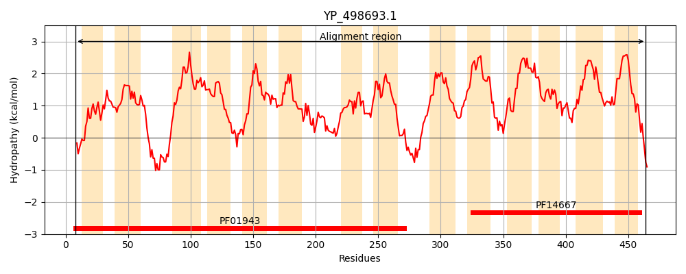
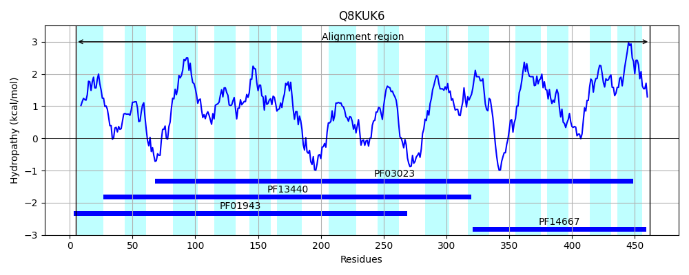
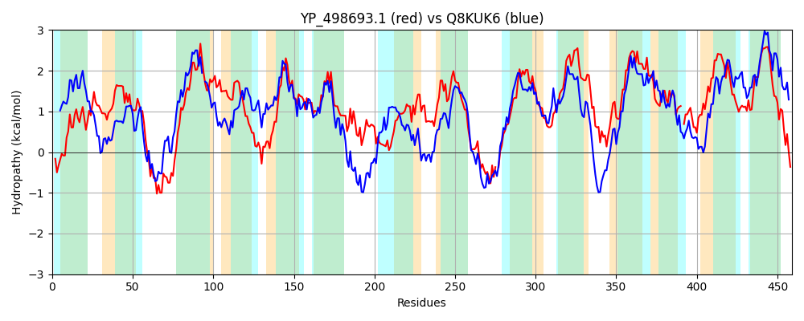

Hit Accession: Q8KUK6
Hit TCID: 2.A.66.2.16
Hit Description: gnl|BL_ORD_ID|16469 gnl|TC-DB|Q8KUK6|2.A.66.2.16 CpsU OS=Streptococcus thermophilus GN=cpsU PE=4 SV=1
Mach Len: 459
e:0.000000
Query TMS Count : 14
Hit TMS Count: 14
TMS-Overlap Score: 11.450000
Predicted Substrates:CHEBI:61650;[3)-beta-D-galactopyranuronosyl-(1->3)-2-acetamido-4-amino-2,4,6-trideoxy-alpha-D-glucopyranosyl-(1->4)-beta-D-galactopyranurosyl-(1->]n
BLAST Alignment:
Score: 688 , Bit scores: 269 bits, E-value: 3.1e-85, Alignment length: 459, Percentage identity: 32
Query: 8 ENIIYQGLYQLIRTMTPLITIPIISRAFGPSGVGIVSFSFNIVQYFLMIASVGVQLYFNRVIAKSVNDKRQLSQQFWDIFVSKLFLALTVFAMYMVVITIFIDDYYLIFLLQGIYIIGAALDISWFYAGTEKFKIPSLSNIVASGIVLSVVVIFVKDQSDLSLYVFTIAIVTVLNQLPLFIYLKRYISFVSVNWIHVWQLFRSSLAYLLPNGQLNLYTSISCVVLGLVGTYQQVGIFSNAFNILTVAIIMINTFDLVMIPRITKMSIQQSHSLTKT-LANNMNIQLILTIPMVFGLIAIMPSFYLWFFGEEFASTVPLMTILAILVLIIPLNMLISRQYLLIVNKIRLYNASITIGAVINLVLCIILIYFYGIYGAAIARLITEFFLLIWR-FIDITKINVKLNIVSTIQCVIAAVMMFIVLGVVNHYLPPTMYATLLLIAIGIVVYLLLMMTMKNQYV 464
+N +Y +YQ+ + PL+TIP +SR GPSG+GI S++ +IVQYF++ S+G+ LY NR IA +++ ++S+ F++IF+ +LF + ++ V I YY +L Q I I+ AA DISWF+ G E FK+ L N + + L + +FVK +DL++Y+ + T++ L F L RY+ V+ + + + SL +P L +Y ++ +LG + + G F + I+ + + ++ VM+PR+ + +S K + + ++IPM+FGLIAI P F FF +F+ +P++ I +I ++ I + I QYLL N+ + Y S+ IGA++NL+L I LI + G GA+IA +I+E + +++ FI ++N+ + +IA ++MF+++ ++ P + LL I +GI++Y++L++ +K + +
Sbjct: 5 KNYLYNAIYQVFIIIVPLLTIPYLSRILGPSGIGINSYTNSIVQYFVLFGSIGLGLYGNRQIAFVRDNQVKMSKVFYEIFILRLFTICLAYFLF-VAFLIINGQYYAYYLSQSIAIVAAAFDISWFFMGIENFKVIVLRNFIVKLLALFSIFLFVKSYNDLNIYILITVLSTLIGNLTFFPSLHRYLVKVNYRELRPIKHLKQSLVMFIPQIALQIYWVLNKTMLGSLDSVTSSGFFDQSDKIVKLVLAIVTATGTVMLPRVANAFAHREYSKIKEYMYAGFSFVSAISIPMMFGLIAITPKFVPLFFTSQFSDVIPVLMIESIAIIFIAWSNAIGNQYLLPTNQNKSYTVSVIIGAIVNLMLNIPLIIYLGAVGASIATVISEMSVTVYQLFIIHKQLNLHTLFSDLSKYLIAGLVMFLIVFKISLLTPTSWIFILLEITVGIIIYIVLLIFLKAEII 462 | Protein Hydropathy Plots: |
|---|
|  |  |
Pairwise Alignment-Hydropathy Plot:
|
|---|
|  |